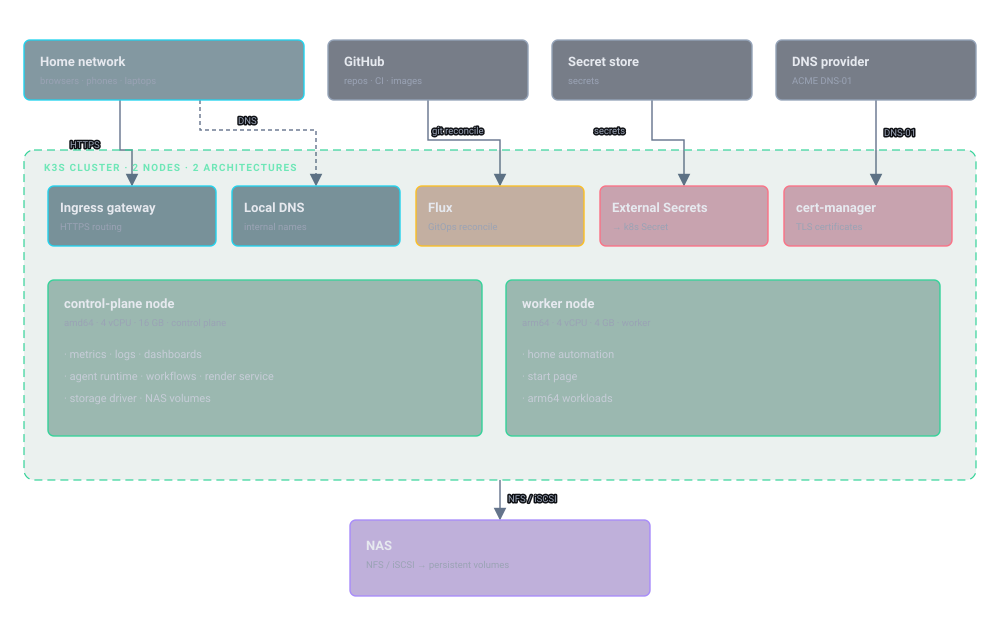
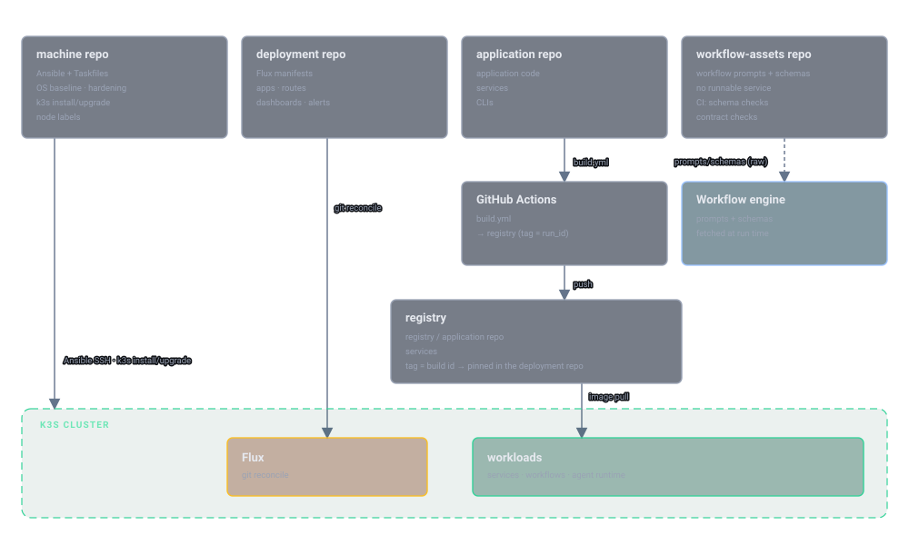
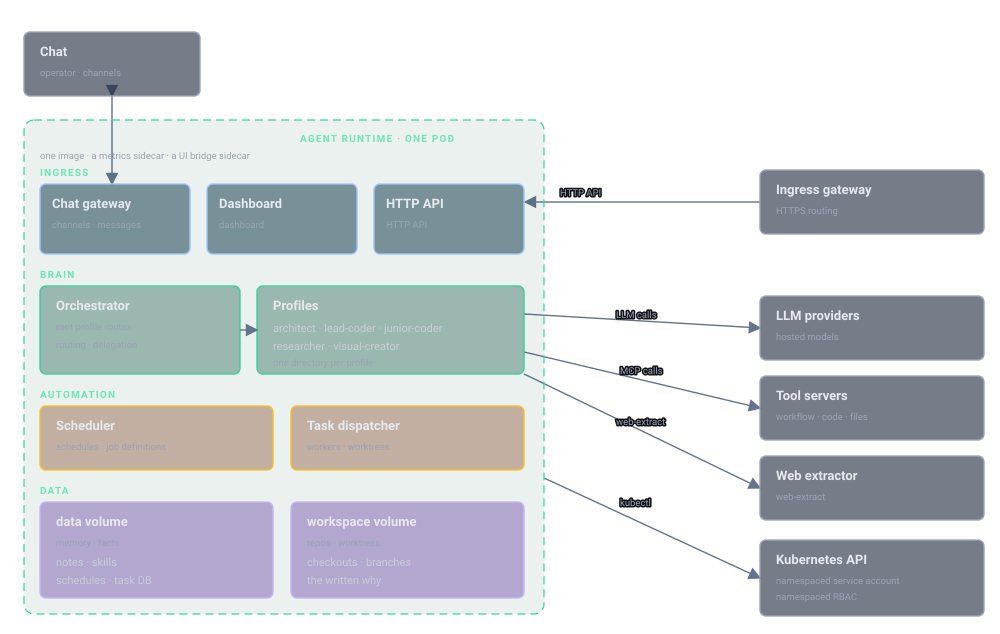
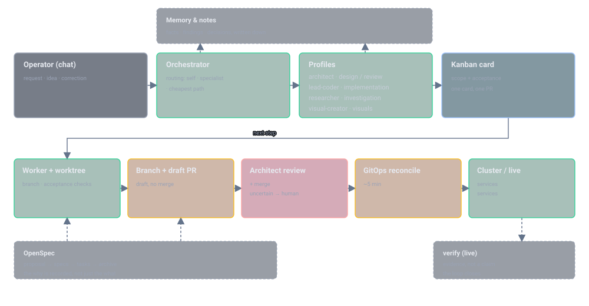

Architecture · how the pieces fit
The core and four layers.
One small cluster, two nodes, one rule: nothing is configured by hand. The machines are provisioned by Ansible, everything above them is declared in Git and reconciled by Flux, and the agent fleet that works on it ships through the same gates as a human change.
The baseline
A cluster is not a pile of YAML. It is a small system that has to be built, fed, watched and kept honest. The baseline is the core. It is the part I would not skip: the pieces that are boring on purpose, so the interesting work on top has something solid to stand on.
The order matters. Provisioning comes first, because nothing above it exists until the machines do. GitOps comes next, because every change above the machine should be reviewable. Access and data make the workloads reachable and durable. Security and observability are the trust layer, the two things that let you believe the rest of it. Workloads sit on top, which is the only reason any of it exists.
Figure 0. The baseline, from the machines up to the workloads.
| Layer | Here |
|---|---|
| Provisioning | Ansible and Taskfiles |
| GitOps | Flux, GitHub Actions and a container registry |
| Access | Envoy Gateway, cert-manager and Pi-hole |
| Data | External Secrets, iSCSI CSI, snapshot-controller and a nightly database backup |
| Observability | VictoriaMetrics, Grafana, VictoriaLogs, Jaeger with OpenTelemetry, blackbox-exporter and Alertmanager to Discord |
| Security | Trivy Operator |
Next up: a policy engine, network policies and resource quotas, then a self-service PR flow for GitOps. The scanner is in place; the rails around it are next. Crossplane is on the list too, but it is overboard for a small on-prem homelab, so I will try it as a demo to learn the shape.
Looking into: an internal developer portal, Backstage or Red Hat Developer Hub on-prem if the cluster has room, or a small SaaS like Port, as a main view and trigger for the processes, and a stakeholder view of the homelab.
Infrastructure
Two nodes on different architectures, one control plane and one worker, sized for what they actually run: storage-heavy workloads on one, edge and home-automation workloads on the other. An ingress gateway terminates TLS, local DNS answers internal names, a certificate manager handles issuance, and secrets arrive from an external store rather than from a file in a repo. Persistent volumes are network storage, so a node can be rebuilt without losing data.

Figure 1. Infrastructure. External dependencies on top, cluster in the middle, storage underneath.
Delivery
Four repositories, each with one job. The machine repo provisions and hardens the nodes. The deployment repo holds the manifests Flux reconciles: applications, routes, dashboards, alerts. The application repo holds the code and its tests; CI builds an image per app, tagged with the build id, and the deployment repo pins that tag. The fourth repo holds workflow prompts and JSON schemas: no runnable service, only the contracts the workflows fetch at run time.
The point of the split is that each artefact has exactly one owner. Nothing is copied between repos, and no build ever writes into the deployment tree.

Figure 2. What each repository produces, and what picks it up.
The agent runtime
One pod. Inside it: a root orchestrator that routes work, a set of specialist profiles with narrow mandates, a scheduler for recurring jobs, and a dispatcher that turns board cards into workers in their own worktrees. State lives in two volumes (memory and facts in one, checkouts and the notes vault in the other), so the pod can be replaced without losing either. Everything external is a dependency with a name: chat, an HTTP API, hosted models, tool servers, a web extractor, and the Kubernetes API through a namespaced service account.

Figure 3. One pod, narrow mandates, two volumes, explicit external dependencies.
The work process
A request arrives in chat, gets routed to the cheapest profile that can do it, and becomes a card with a scope and an acceptance line. A worker takes the card in its own worktree, pushes a branch and opens a draft PR. A review gate decides: merge, send back with changes, or escalate to a human when the call is not the agent's to make. Flux reconciles the merge into the cluster, and the change is verified live rather than assumed.
Two rails run alongside the loop: the written why (proposals, specs, findings, decisions) and the evidence that the thing actually works. A gate that cannot fail is worse than no gate, so every check here is able to turn red.

Figure 4. The loop from request to live, with the why and the evidence attached.